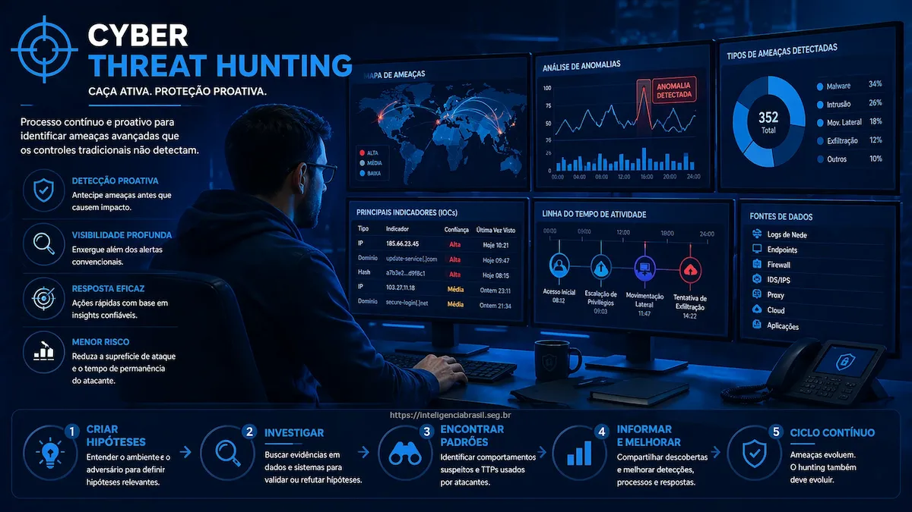

Neste artigo
O que é Threat Hunting
A área de Threat Hunting, traduzido para a língua portuguesa como "caça de ameaças", é uma prática fundamental no campo da cibersegurança, voltada para a identificação proativa de ameaças cibernéticas e ações maliciosas dentro das redes e sistemas de uma organização.
Trata-se de uma abordagem proativa que vai além da simples detecção de ameaças por meio de soluções automatizadas de segurança, como antivírus e firewalls, e envolve a busca ativa por indicadores de comprometimento (IOCs) e técnicas, táticas e procedimentos (TTPs) usados por invasores.
Threat Hunting é a diferença entre esperar um alerta e ir ativamente buscar o invasor antes que ele cause danos.
Origem do termo Threat Hunting
O termo "threat hunting" na cibersegurança refere-se à prática de buscar proativamente ameaças cibernéticas dentro de uma rede ou sistema, em vez de apenas esperar por alertas automáticos de sistemas de segurança.
A origem do termo é um pouco obscura, sem relatos precisos em diversas literaturas, mas o conceito de "caçar" ameaças tem raízes nas operações de segurança militar e nas investigações de segurança tradicionais.
O Threat Hunting moderno como conhecemos hoje ganhou destaque nas últimas décadas devido ao aumento da sofisticação das ameaças cibernéticas. A necessidade de buscar ativamente ameaças tornou-se evidente à medida que as organizações perceberam que as soluções de segurança automatizadas, por mais avançadas que sejam, não podem capturar todas as ameaças, especialmente aquelas que são novas e desconhecidas.
A Importância do Threat Hunting
A importância da área de Threat Hunting reside na capacidade de antecipar e neutralizar ameaças cibernéticas antes que elas causem danos significativos às operações e à reputação de uma organização.
As soluções tradicionais de segurança desempenham um papel vital na defesa contra ameaças conhecidas, mas muitas vezes são ineficazes na detecção de ameaças desconhecidas ou avançadas. É aí que entra o Threat Hunting.
Diferença fundamental: Enquanto sistemas tradicionais esperam por alertas, o Threat Hunting assume que a rede já pode estar comprometida e busca ativamente por evidências de intrusão.
Vantagens do Threat Hunting para Organizações
Essa abordagem de caça ativa de ameaças oferece diversas vantagens para as organizações:
1. Identificação antecipada de ameaças
O Threat Hunting permite que as organizações identifiquem ameaças em estágios iniciais, muito antes que essas ameaças possam causar danos significativos.
A análise de dados de segurança em busca de indicativos de atividades maliciosas permite identificar ameaças em estágios iniciais, quando os invasores estão explorando a rede, mas antes que tenham sucesso.
Referência: Verizon Data Breach Investigations Report (DBIR)
2. Compreensão aprofundada
Ao explorar ativamente a rede e os sistemas, os caçadores de ameaças podem obter uma compreensão mais profunda das ameaças e das técnicas utilizadas, o que ajuda na melhoria da segurança.
O Threat Hunting envolve investigações detalhadas para entender como as ameaças operam, que técnicas empregam e quais vulnerabilidades exploram. Isso ajuda as equipes de segurança a aprimorar suas defesas.
Referência: "Tribe of Hackers" - Marcus J. Carey e Jennifer Jin
3. Redução de riscos e custos
Ao identificar e mitigar ameaças cibernéticas antes que causem estragos, as organizações podem reduzir o risco de violações de dados e os custos associados a incidentes de segurança.
Violações de dados podem resultar em custos substanciais, como despesas legais, perda de receita e danos à reputação. Para complementar o Threat Hunting, considere implementar monitoramento contínuo de ameaças.
Referência: IBM Security / Ponemon Institute - O custo médio de uma violação de dados em 2025 foi de US$ 4,88 milhões globalmente (R$ 6,75 milhões no Brasil).
4. Proteção da reputação
A reputação de uma organização pode ser gravemente prejudicada em caso de violação de dados. O Threat Hunting ajuda a evitar tais incidentes, protegendo a reputação da empresa.
Casos notórios de violações de dados, como o incidente da Equifax, ilustram como a reputação de uma empresa pode ser afetada por violações e a importância de evitar esses incidentes.
5. Conformidade com regulamentações
Em muitos setores, existem regulamentações estritas de segurança de dados. A prática de Threat Hunting ajuda as organizações a cumprir essas regulamentações.
Regulamentações como o GDPR na União Europeia e a LGPD no Brasil exigem que as organizações implementem medidas adequadas de segurança. O Threat Hunting demonstra uma postura proativa de proteção.
Conclusão
Em um ambiente de ameaças cibernéticas em constante evolução, o Threat Hunting emergiu como uma peça fundamental no quebra-cabeça da cibersegurança empresarial.
Ele oferece às empresas a capacidade de identificar, entender e neutralizar ameaças antes que causem danos significativos. Investir em Threat Hunting não é apenas uma medida proativa, mas também uma salvaguarda vital para proteger ativos, dados e a reputação de uma empresa no cenário de ameaças cibernéticas de hoje.
Adotar a prática de Threat Hunting é essencial para a segurança cibernética e o sucesso das empresas no ambiente digital atual.
Como a Inteligência Brasil pode ajudar
Se a sua empresa ainda não tem um time de Threat Hunting ou profissionais qualificados para executar as missões de cibersegurança necessárias para evolução do seu negócio, nós podemos auxiliar com essa demanda e desafio.
Na Inteligência Brasil, oferecemos serviços especializados em:
- Threat Hunting as a Service - Equipe dedicada para caça proativa de ameaças
- Treinamento de equipes - Capacitação de profissionais em técnicas de hunting
- Implementação de processos - Estruturação de programas de Threat Hunting
- Análise de TTPs - Mapeamento de técnicas usando frameworks como MITRE ATT&CK v19
Fortaleça sua segurança com Threat Hunting
Entre em contato para conhecer nossos serviços de Threat Hunting e como podemos ajudar sua organização a identificar ameaças antes que causem danos.